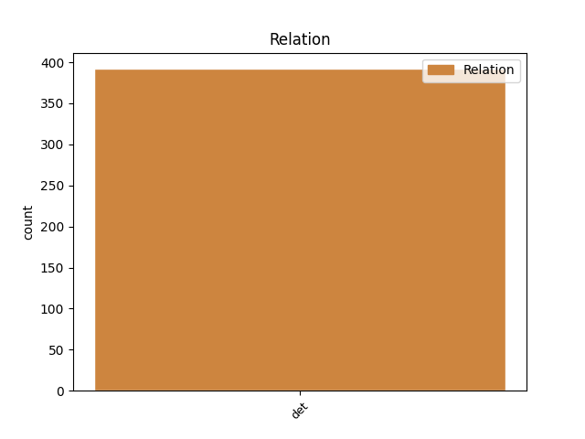
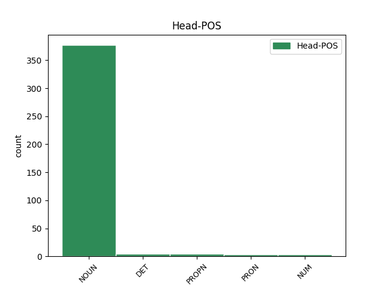
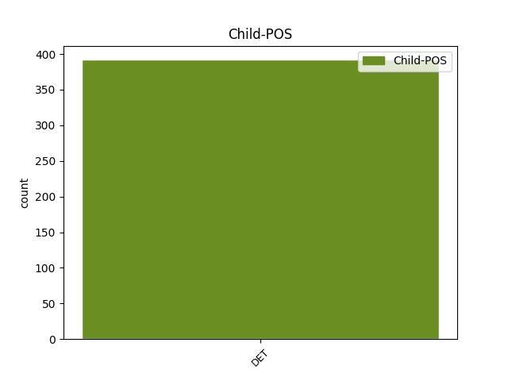

Distribution of features within this leaf



Agreement Rules sorted by frequency.
- When the dependent token is the determiner(det) of the head token, and the head token is NOUN and the dependent token is DET.
1 aha _ _ _ _ 0 _ _ _
2 kul _ _ _ _ 0 _ _ _
3 eee _ _ _ _ 0 _ _ _
4 čakaj _ _ _ _ 0 _ _ _
5 še _ _ _ _ 0 _ _ _
6 kako kak DET Pq-nsn Case=Nom|Gender=Neut|Number=Sing|PronType=Int 7 det _ msd=Zv-sei|word=kako
7 vprašanje vprašanje NOUN Ncnsn Case=Nom|Gender=Neut|Number=Sing 0 _ _ _
8 eee _ _ _ _ 0 _ _ _
9 to _ _ _ _ 0 _ _ _
10 pa _ _ _ _ 0 _ _ _
11 eee _ _ _ _ 0 _ _ _
12 če _ _ _ _ 0 _ _ _
13 če _ _ _ _ 0 _ _ _
14 nabavim _ _ _ _ 0 _ _ _
15 to _ _ _ _ 0 _ _ _
16 imate _ _ _ _ 0 _ _ _
17 k _ _ _ _ 0 _ _ _
18 [gap] _ _ _ _ 0 _ _ _
19 kako _ _ _ _ 0 _ _ _
20 je _ _ _ _ 0 _ _ _
21 tako _ _ _ _ 0 _ _ _
22 zdaj _ _ _ _ 0 _ _ _
23 ena _ _ _ _ 0 _ _ _
24 cena _ _ _ _ 0 _ _ _
25 za _ _ _ _ 0 _ _ _
26 en _ _ _ _ 0 _ _ _
27 mesec _ _ _ _ 0 _ _ _
28 če _ _ _ _ 0 _ _ _
29 bi _ _ _ _ 0 _ _ _
30 jaz _ _ _ _ 0 _ _ _
31 to _ _ _ _ 0 _ _ _
32 hotel _ _ _ _ 0 _ _ _
33 pač _ _ _ _ 0 _ _ _
34 en _ _ _ _ 0 _ _ _
35 mesec _ _ _ _ 0 _ _ _
36 hotel _ _ _ _ 0 _ _ _
37 to _ _ _ _ 0 _ _ _
38 jest _ _ _ _ 0 _ _ _
39 ? _ _ _ _ 0 _ _ _
1 eee _ _ _ _ 0 _ _ _
2 po _ _ _ _ 0 _ _ _
3 ta _ _ _ _ 0 _ _ _
4 drugi _ _ _ _ 0 _ _ _
5 strani _ _ _ _ 0 _ _ _
6 pa _ _ _ _ 0 _ _ _
7 ker _ _ _ _ 0 _ _ _
8 je _ _ _ _ 0 _ _ _
9 tudi _ _ _ _ 0 _ _ _
10 vse ves DET Pg-nsn Case=Nom|Gender=Neut|Number=Sing|PronType=Tot 11 det _ msd=Zc-sei|word=vse
11 to ta DET Pd-nsn Case=Nom|Gender=Neut|Number=Sing|PronType=Dem 0 _ _ _
12 odprto _ _ _ _ 0 _ _ _
13 in _ _ _ _ 0 _ _ _
14 vse _ _ _ _ 0 _ _ _
15 tako _ _ _ _ 0 _ _ _
16 ti _ _ _ _ 0 _ _ _
17 točno _ _ _ _ 0 _ _ _
18 veš _ _ _ _ 0 _ _ _
19 če _ _ _ _ 0 _ _ _
20 rečemo _ _ _ _ 0 _ _ _
21 pri _ _ _ _ 0 _ _ _
22 tejle _ _ _ _ 0 _ _ _
23 hiši _ _ _ _ 0 _ _ _
24 si _ _ _ _ 0 _ _ _
25 pač _ _ _ _ 0 _ _ _
26 prej _ _ _ _ 0 _ _ _
1 ampak _ _ _ _ 0 _ _ _
2 eee _ _ _ _ 0 _ _ _
3 skratka _ _ _ _ 0 _ _ _
4 si _ _ _ _ 0 _ _ _
5 pravi _ _ _ _ 0 _ _ _
6 kleni _ _ _ _ 0 _ _ _
7 pohorec _ _ _ _ 0 _ _ _
8 kako _ _ _ _ 0 _ _ _
9 se _ _ _ _ 0 _ _ _
10 pa _ _ _ _ 0 _ _ _
11 štekate _ _ _ _ 0 _ _ _
12 z _ _ _ _ 0 _ _ _
13 onimi oni DET Pd-mpi Case=Ins|Gender=Masc|Number=Plur|PronType=Dem 14 det _ msd=Zk-mmo|word=onimi
14 savinjčani Savinjčan PROPN Npmpi Case=Ins|Gender=Masc|Number=Plur 0 _ _ _
15 ? _ _ _ _ 0 _ _ _
1 daj _ _ _ _ 0 _ _ _
2 no _ _ _ _ 0 _ _ _
3 eee _ _ _ _ 0 _ _ _
4 naše naš DET Ps1nsnp Case=Nom|Gender=Neut|Number=Sing|Number[psor]=Plur|Person=1|Poss=Yes|PronType=Prs 5 det _ msd=Zspseim|word=naše
5 dva dva NUM Mlcmdn Case=Nom|Gender=Masc|Number=Dual|NumForm=Word|NumType=Card 0 _ _ _
6 sta _ _ _ _ 0 _ _ _
7 šla _ _ _ _ 0 _ _ _
8 pred _ _ _ _ 0 _ _ _
9 enim _ _ _ _ 0 _ _ _
10 štirinajstimi _ _ _ _ 0 _ _ _
11 dnevi _ _ _ _ 0 _ _ _
12 ampak _ _ _ _ 0 _ _ _
13 takrat _ _ _ _ 0 _ _ _
14 še _ _ _ _ 0 _ _ _
15 ni _ _ _ _ 0 _ _ _
16 bilo _ _ _ _ 0 _ _ _
17 tako _ _ _ _ 0 _ _ _
1 in _ _ _ _ 0 _ _ _
2 zgolj _ _ _ _ 0 _ _ _
3 za _ _ _ _ 0 _ _ _
4 primer _ _ _ _ 0 _ _ _
5 preko _ _ _ _ 0 _ _ _
6 sto _ _ _ _ 0 _ _ _
7 tisoč _ _ _ _ 0 _ _ _
8 evrov _ _ _ _ 0 _ _ _
9 da _ _ _ _ 0 _ _ _
10 naša _ _ _ _ 0 _ _ _
11 država _ _ _ _ 0 _ _ _
12 tudi _ _ _ _ 0 _ _ _
13 delavka _ _ _ _ 0 _ _ _
14 mure _ _ _ _ 0 _ _ _
15 tudi _ _ _ _ 0 _ _ _
16 vsi ves DET Pg-mpn Case=Nom|Gender=Masc|Number=Plur|PronType=Tot 17 det _ msd=Zc-mmi|word=vsi
17 mi jaz PRON Pp1mpn Case=Nom|Gender=Masc|Number=Plur|Person=1|PronType=Prs 0 _ _ _
18 za _ _ _ _ 0 _ _ _
19 to _ _ _ _ 0 _ _ _
20 da _ _ _ _ 0 _ _ _
21 leto _ _ _ _ 0 _ _ _
22 dni _ _ _ _ 0 _ _ _
23 stoji _ _ _ _ 0 _ _ _
24 plakat _ _ _ _ 0 _ _ _
25 v _ _ _ _ 0 _ _ _
26 b _ _ _ _ 0 _ _ _
27 [gap] _ _ _ _ 0 _ _ _
28 na _ _ _ _ 0 _ _ _
29 bruseljskem _ _ _ _ 0 _ _ _
30 letališču _ _ _ _ 0 _ _ _
Disagree Examples:
1 in _ _ _ _ 0 _ _ _
2 je _ _ _ _ 0 _ _ _
3 kar _ _ _ _ 0 _ _ _
4 zabavno _ _ _ _ 0 _ _ _
5 pogledati _ _ _ _ 0 _ _ _
6 kako _ _ _ _ 0 _ _ _
7 oni _ _ _ _ 0 _ _ _
8 tekmujejo _ _ _ _ 0 _ _ _
9 med _ _ _ _ 0 _ _ _
10 sabo _ _ _ _ 0 _ _ _
11 pa _ _ _ _ 0 _ _ _
12 en _ _ _ _ 0 _ _ _
13 se _ _ _ _ 0 _ _ _
14 en _ _ _ _ 0 _ _ _
15 pada _ _ _ _ 0 _ _ _
16 pol _ _ _ _ 0 _ _ _
17 pa _ _ _ _ 0 _ _ _
18 podre _ _ _ _ 0 _ _ _
19 vseh _ _ _ _ 0 _ _ _
20 drugih _ _ _ _ 0 _ _ _
21 [all:laughter] _ _ _ _ 0 _ _ _
22 pa _ _ _ _ 0 _ _ _
23 ima _ _ _ _ 0 _ _ _
24 tej ta DET Pd-fsl Case=Loc|Gender=Fem|Number=Sing|PronType=Dem 25 det _ msd=Zk-zem|word=tej
25 skoki skok NOUN Ncmpn Case=Nom|Gender=Masc|Number=Plur 0 _ _ _
26 ki _ _ _ _ 0 _ _ _
27 so _ _ _ _ 0 _ _ _
28 hude _ _ _ _ 0 _ _ _
29 in _ _ _ _ 0 _ _ _
1 eee _ _ _ _ 0 _ _ _
2 po _ _ _ _ 0 _ _ _
3 ta ta DET Pd-msn Case=Nom|Gender=Masc|Number=Sing|PronType=Dem 5 det _ msd=Zk-mei|word=ta
4 drugi _ _ _ _ 0 _ _ _
5 strani stran NOUN Ncfsl Case=Loc|Gender=Fem|Number=Sing 0 _ _ _
6 pa _ _ _ _ 0 _ _ _
7 ker _ _ _ _ 0 _ _ _
8 je _ _ _ _ 0 _ _ _
9 tudi _ _ _ _ 0 _ _ _
10 vse _ _ _ _ 0 _ _ _
11 to _ _ _ _ 0 _ _ _
12 odprto _ _ _ _ 0 _ _ _
13 in _ _ _ _ 0 _ _ _
14 vse _ _ _ _ 0 _ _ _
15 tako _ _ _ _ 0 _ _ _
16 ti _ _ _ _ 0 _ _ _
17 točno _ _ _ _ 0 _ _ _
18 veš _ _ _ _ 0 _ _ _
19 če _ _ _ _ 0 _ _ _
20 rečemo _ _ _ _ 0 _ _ _
21 pri _ _ _ _ 0 _ _ _
22 tejle _ _ _ _ 0 _ _ _
23 hiši _ _ _ _ 0 _ _ _
24 si _ _ _ _ 0 _ _ _
25 pač _ _ _ _ 0 _ _ _
26 prej _ _ _ _ 0 _ _ _
1 tako _ _ _ _ 0 _ _ _
2 je _ _ _ _ 0 _ _ _
3 to _ _ _ _ 0 _ _ _
4 se _ _ _ _ 0 _ _ _
5 ves _ _ _ _ 0 _ _ _
6 čas _ _ _ _ 0 _ _ _
7 ponavlja _ _ _ _ 0 _ _ _
8 zdaj _ _ _ _ 0 _ _ _
9 bo _ _ _ _ 0 _ _ _
10 pa _ _ _ _ 0 _ _ _
11 nekdo _ _ _ _ 0 _ _ _
12 povedal _ _ _ _ 0 _ _ _
13 to ta DET Pd-nsn Case=Nom|Gender=Neut|Number=Sing|PronType=Dem 14 det _ msd=Zk-sei|word=to
14 kroženje kroženje NOUN Ncnsa Case=Acc|Gender=Neut|Number=Sing 0 _ _ _
15 vod _ _ _ _ 0 _ _ _
16 srkanje _ _ _ _ 0 _ _ _
17 te _ _ _ _ 0 _ _ _
18 kolo _ _ _ _ 0 _ _ _
19 [gap] _ _ _ _ 0 _ _ _
20 vode _ _ _ _ 0 _ _ _
21 minerali _ _ _ _ 0 _ _ _
22 pa _ _ _ _ 0 _ _ _
23 do _ _ _ _ 0 _ _ _
24 konca _ _ _ _ 0 _ _ _